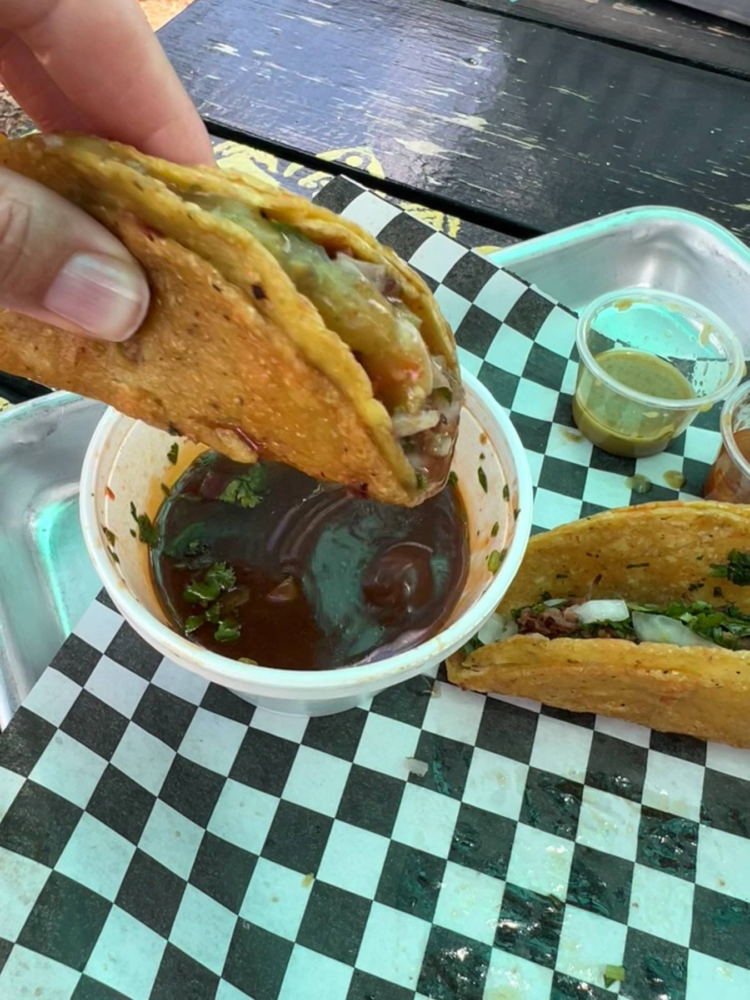

Tacos
Steak, suadero and chicken tacos, well filled, with onions, cilantro and sauces to dress them.
Food truck · Cedar Park, TX
Steak, suadero and birria tacos with fresh veggies, plenty of sauce and fast, friendly service.

What to order
Tacos and quesadillas, made to order.
Steak, suadero and chicken tacos, well filled, with onions, cilantro and sauces to dress them.

Birria tacos with a cup of dipping sauce on the side.

Golden quesadillas off the griddle, including a chicken birria quesadilla.
4.7 ★ · 386 Google reviews
Had a Birria Taco and Chicken Taco. Both were Fantastic! The dip's, hot sauce and toppings were also excellent and added to the Taco experience. Some of the best Taco's I have ever had. I will be back (many times)!
Authentic Mexican food is served at this family-owned business that’s made with love and makes you feel right at home. My favorite menu item is the Chicken Birria Quesadilla although the Steak Tacos are a close second. Staff is fast, friendly, and the quality of food and service are always consistent. This place never fails to make my day better!
Steak tacos are the best item on the menu to me. The food has flavor and the veggies are fresh. The watermelon drink was really good. 10/10 I highly recommend!
Nuestra historia
Look for the black trailer with teal lettering. Steak, suadero, chicken and birria tacos, quesadillas and a cold watermelon drink.
Family-owned, made with love. Fast, friendly service. Grab a picnic table or a seat on the shaded patio.

Ven a vernos
2301 Brushy Creek Rd, Cedar Park, TX 78613
Picnic tables and a shaded patio to sit and eat. Closed Mondays.